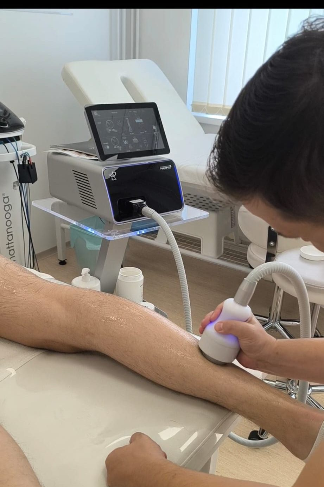
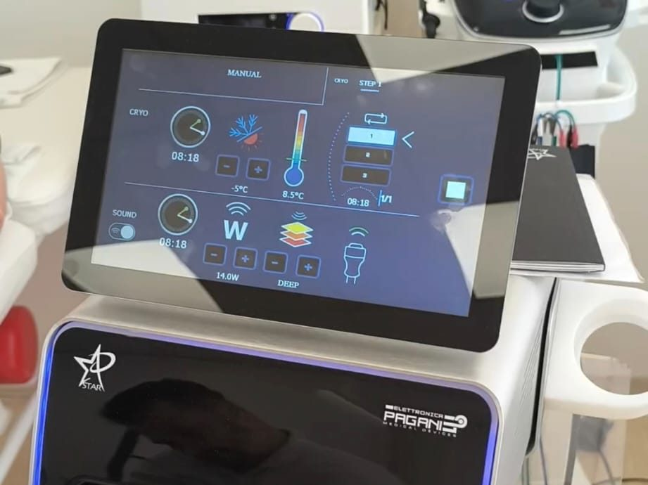
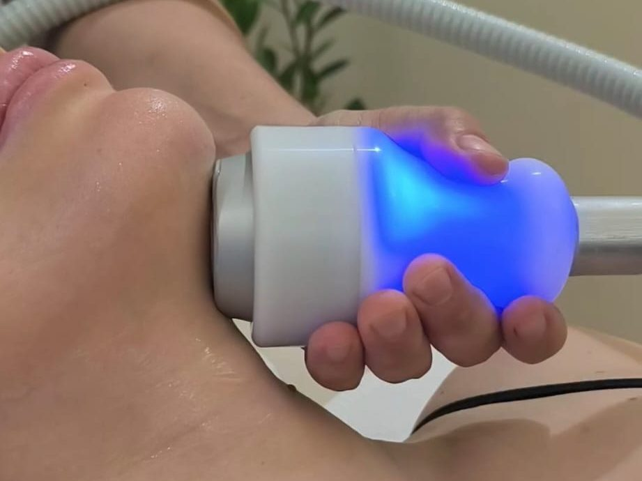
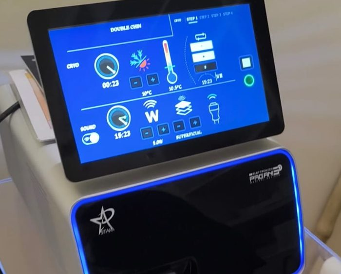

Krio ultrazvuk — hladnoća i ultrazvuk u jednom tretmanu
Otok i bol posle povrede koji nikako da prođu, ukočen mišić posle treninga — ili želja da koža lica, vrata i tela deluje čvršće i negovanije? Krio ultrazvuk spaja dve proverene stvari u jednom tretmanu: kontrolisanu hladnoću (krioterapiju) i terapijski ultrazvuk. Hladnoća smiruje bol i otok, ultrazvuk radi dublje u tkivu — a poseban aplikator prijatno klizi po koži uz gel. Jedan uređaj, dva sveta: terapija i nega.

Kako izgleda tretman
Gel i aplikator
Na kožu se nanosi gel, a glatki aplikator polako klizi preko područja — slično klasičnom ultrazvuku. Ništa se ne lepi, ništa ne seče.
Hladnoća + ultrazvuk
Osećate prijatnu hladnoću i vrlo blagu vibraciju ultrazvuka. Intenzitet i temperaturu podešavamo prema vama — bez igle, bez peckanja, bez bola.
Odmah nastavljate dan
Tretman ne zahteva mirovanje. Koža može biti nakratko rumena od hladnoće, ali to brzo prolazi i odmah nastavljate svoje obaveze.
Kada krio ultrazvuk najbolje radi
Isti uređaj koristimo za dve grupe ciljeva — terapijske (oporavak i bol) i estetske (nega i izgled kože). Program, temperaturu i dubinu biramo prema tome šta vam je potrebno.
Terapija i oporavak
- Sveže povrede — uganuća, istegnuća, nagnječenja (otok i bol)
- Bol i zapaljenje tetiva (tenis lakat, Ahilova, patelarna)
- Ukočenost i bol mišića posle treninga (DOMS), sportski oporavak
- Otok posle povrede ili operacije — uz dogovor i procenu
- Bol u zglobovima i burzitis
- Napetost i „čvorovi" u mišićima vrata i leđa
Estetika i nega kože
- Zatezanje i tonizovanje kože lica, vrata i dekoltea
- „Dupli podbradak" i definisanje linije vilice
- Celulit i oblikovanje konture tela
- Poboljšanje tonusa i elastičnosti kože
- Osvežavanje i „buđenje" umorne kože pred događaj
- Nega kože sklone otoku i gubitku čvrstine


Koliko traje i kako se planira
Polazne vrednosti — temperaturu, snagu ultrazvuka i režim biramo prema cilju, području i vašem osetu. Ništa nije fiksno; sve podešavamo uživo.
- Trajanje sesije
- 15–30 min (zavisno od područja)
- Kombinacija
- krioterapija + ultrazvuk (zajedno ili u koracima)
- Dubina ultrazvuka
- površinski ili dublji režim
- Osećaj
- prijatna hladnoća i blaga vibracija
- Tipičan pristup
- estetika u serijama; povrede prema fazi
- Priprema
- gel na koži, bez igala i rezova

Šta da očekujete
Prvo kratko popričamo o cilju — da li je u pitanju bol i otok posle povrede, oporavak mišića, ili estetska nega kože. Na osnovu toga biramo program, temperaturu i dubinu ultrazvuka. Nanosimo gel, aplikator klizi po koži, a vi osećate prijatnu hladnoću uz vrlo blagu vibraciju. Tokom 15 do 30 minuta ne radite ništa. Kod terapije cilj je da se bol i otok smire i da se ubrza oporavak; kod estetike da koža deluje čvršće i negovanije. Efekat na koži se najčešće gradi kroz seriju tretmana, dok kod svežih povreda olakšanje umeju da osete i ranije. Posle sesije nema pauze — odmah nastavljate dan.
Kada krio ultrazvuk nije za vas
Molimo vas da nam unapred kažete ako: imate preosetljivost na hladnoću, Rejnoov sindrom ili krioglobulinemiju (hladnoća tada nije pogodna), ste trudni (ne radimo preko trbuha i krsta), imate pejsmejker ili metalne implantate u zoni tretmana (ultrazvuk — oprez), imate aktivni malignitet u predelu (samo uz saglasnost onkologa), imate trombozu ili teži poremećaj cirkulacije, aktivnu infekciju kože, otvorenu ranu ili aktivno kožno stanje na tom mestu, ili tešku srčanu odnosno vaskularnu bolest. Ultrazvuk nikada ne usmeravamo direktno preko očiju, štitne žlezde i polnih žlezda. Pre prvog tretmana sve ovo zajedno ukratko proverimo — bezbednost je uvek na prvom mestu.